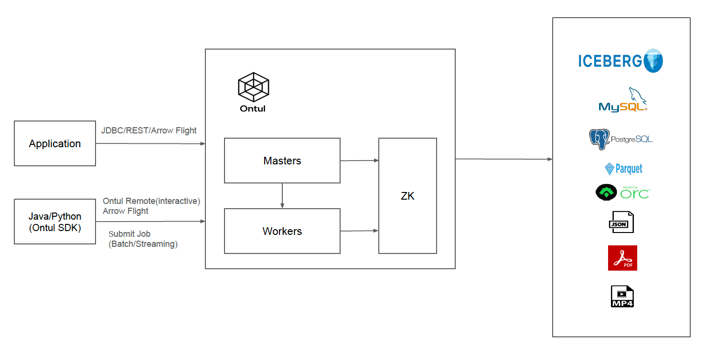

Architecture
Ontul is a distributed unified data engine that combines a processing engine and a query engine into a single system. Instead of operating separate clusters for batch processing, stream processing, and interactive SQL queries, Ontul provides all three capabilities in one engine — reducing operational complexity and eliminating redundant infrastructure.
- Processing Engine: Distributed batch and stream processing with a programmatic SDK (Java, Python). Submit batch ETL jobs, run continuous streaming pipelines (Kafka → Iceberg), and execute complex data transformations — all within the same cluster.
- Query Engine: Interactive SQL queries with federation across multiple data sources. Connect from any JDBC tool (DBeaver, DataGrip) or BI platform via Arrow Flight SQL, and query Iceberg, JDBC databases, files on S3, and more through a unified SQL interface.
Both modes share the same distributed execution engine, the same Arrow-native operator pipeline, and the same cluster infrastructure. A single Ontul deployment replaces what traditionally requires three or more separate systems.
Ontul Architecture

Ontul consists of two main deployable components: Master and Worker.
Master
The Master is the entry point for all client interactions — SQL queries, job submissions, and administrative operations.
- SQL Parsing & Planning: Parses SQL using Apache Calcite with a rule-based optimizer. Supports standard DML (INSERT, UPDATE, DELETE, MERGE INTO), DDL (CREATE TABLE, DROP, ALTER, CREATE VIEW), metadata commands (SHOW CATALOGS/SCHEMAS/TABLES, DESCRIBE, EXPLAIN), and full SELECT queries including JOINs, aggregations, window functions, CTEs, and subqueries.
- Distributed Planning: Generates physical execution plans with an operator tree, resolves data splits from connectors, and distributes per-worker plans with split assignments. Supports predicate pushdown to connectors and plan caching (SHA-256 based LRU cache) for repeated queries.
- Job Management: Manages batch and streaming jobs submitted via the SDK or REST API. Small batch jobs run with the Master as driver; large batch and streaming jobs are delegated to a Worker as driver, keeping the Master lightweight. Tracks job lifecycle (SUBMITTED → RUNNING → COMPLETED/FAILED/KILLED) with history stored locally or on S3.
- Multi-Catalog Management: Manages multiple data source catalogs with a 3-level Calcite schema hierarchy (Catalog → Schema → Table). Catalogs can be dynamically registered and unregistered at runtime without restarts.
- Arrow Flight SQL Server: Provides the Flight SQL endpoint for JDBC and Arrow-native client connections. Supports multiple authentication methods: JWT bearer tokens, access key pairs, STS temporary credentials, and basic auth.
- Admin API & UI: Exposes a Netty HTTP/2 REST API and serves the React-based Admin UI for cluster management, catalog browsing, SQL query editor, job monitoring, IAM, KMS, backup/restore, and Prometheus metrics.
- Cluster State Management: The leader Master maintains all cluster state — catalog metadata, IAM policies, KMS keys, sessions, and connection credentials — in RocksDB, and synchronizes to follower Masters via the internal NIO protocol.
Worker
The Worker is the execution engine that processes both query plans and long-running jobs.
- Operator Pipeline Execution: Executes physical plans as a pull-based streaming operator pipeline: Scan → Filter → Project → HashJoin / SortMergeJoin → HashAggregate → Sort → TopN → Window → Exchange. All operators process data in Apache Arrow columnar format for vectorized execution.
- Split-Based Data Reading: Reads data splits independently via connector-specific RecordBatchReaders. Each Worker processes only its assigned splits, enabling parallel data ingestion across the cluster.
- Memory Management & Disk Spill: Worker local disk is used exclusively for temporary spill storage, not permanent data. When operators (Sort, HashJoin, HashAggregate) exceed the memory threshold, intermediate results spill to disk via SpillStore with automatic cleanup.
- Data Shuffling: Transfers intermediate results between Workers via Arrow Flight for operations requiring data redistribution (joins, aggregations across partitions).
- Streaming Job Execution: Runs long-lived streaming pipelines (e.g., Kafka → processing → Iceberg/Kafka) with watermark and window support. Streaming jobs are always assigned to Workers as drivers.
- SQL UDF Execution: Executes user-defined scalar functions registered via the Ontul SDK as first-class Calcite functions. Java method-reference UDFs run in-process under a cached deps
URLClassLoader(so static state — caches, ML models — survives across queries). Python UDFs execute in a long-lived per-worker subprocess with batch-level Arrow IPC, isolating Python dependencies from the JVM. UDFs support primitive,byte[],List<X>, and POJOstructreturn types — POJOs are materialised directly into ArrowStructVectorwithout any JSON detour.
Execution Modes
Ontul supports two execution modes within the same cluster:
Query Mode (Interactive SQL)
Clients connect via Arrow Flight SQL (JDBC, Python pyarrow.flight, Ontul Python SDK) and submit SQL queries. The Master parses and plans the query, then distributes execution plans to Workers. After planning, Workers communicate directly with each other (W2W) for shuffles — the Master is not a bottleneck during execution. Results stream back to the client via Arrow Flight.
Job Mode (Batch & Streaming)
Clients submit jobs programmatically using the Ontul SDK:
- Client mode (
session.source()/df.sink()): Interactive, no dependency upload needed. Results return to the client directly. - Server mode (
session.submit(MyJob.class)): Upload JARs with custom dependencies to the server. Jobs run asynchronously; the client can disconnect after submission. Suitable for scheduled batch ETL (e.g., via Airflow) and long-running streaming pipelines.
SQL and code can be mixed freely in both modes. Execution is lazy — the full plan is optimized at .execute() time.
Communication Architecture
Ontul uses a strict two-channel communication design:
Control Plane — Custom NIO Protocol
A lightweight binary protocol for all non-data communication between nodes:
- Wire format:
[4B length][4B correlationId][2B opCode][1B flags][payload] - Health checks, readiness checks, heartbeats
- Metadata, IAM, KMS, session, and connection state synchronization (Master → Master)
- Task assignment and cancellation signals (Master → Worker)
- Catalog configuration sync (Master → Worker)
Data Plane — Apache Arrow Flight
Arrow Flight is used exclusively for bulk data transfer:
- Query results (Worker → Master → Client)
- Shuffle data between Workers (W2W)
- Source/Sink data transfers for jobs
- All data stays in Arrow IPC binary format — no JSON serialization, no base64 encoding
Cluster Coordination
Ontul uses Apache ZooKeeper (via Curator) for:
- Service Discovery: Masters and Workers register as ephemeral nodes, enabling automatic detection of node joins and failures.
- Leader Election: ZooKeeper leader latch elects a primary Master that owns all write operations to the state store (RocksDB). On leader failure, a new leader is automatically elected and reloads persisted state.
- State Replication: The leader Master replicates state to follower Masters via NIO sync messages (METADATA_SYNC_PUSH, KMS_SYNC_PUSH, IAM_SYNC_PUSH, SESSION_SYNC_PUSH, CONN_SYNC_PUSH).
- Worker Health Monitoring: Scheduled health checks from Master to Workers with configurable intervals, timeouts, and failure thresholds. Unhealthy Workers are automatically detected and excluded from query planning.
Connector Architecture
Ontul is a processing engine, not a storage engine. Data lives in external systems accessed through a plugin-based connector architecture with three distinct concepts:
Connectors (physical connections): S3, JDBC, Kafka — credentials stored in the encrypted ConnectionStore.
Catalogs (table metadata): Iceberg (REST/JDBC/Hadoop), JDBC, TPC-H, TPC-DS, File, CDC, Delta Lake, Elasticsearch — registered at runtime, referencing Connectors by connection ID.
Formats (data serialization): Parquet, ORC, CSV, JSON, Avro.
Built-in connectors:
- Iceberg: Read/write via REST catalog (e.g., Polaris, Nessie). Parquet and ORC formats. Snapshot isolation, schema evolution, streaming writes, and automated maintenance (snapshot expiration, data compaction, manifest rewrite, orphan file cleanup).
- File: Read Parquet, ORC, CSV, JSON, Avro files from S3-compatible storage or local filesystem. Recursive directory scan with hidden file filtering.
- JDBC: Query external databases with HikariCP connection pooling and configurable split sizes for parallel reads.
- Kafka: Streaming source (JSON, Avro with Schema Registry, raw format) and sink (JSON with optional partitioning).
- CDC (Debezium): Consume Debezium change events from Kafka for CDC pipelines.
- Delta Lake: Read Delta tables by parsing the transaction log.
- Elasticsearch: Query Elasticsearch indices via the scroll API.
- TPC-H / TPC-DS: Built-in benchmark data generators with configurable scale factors.
External connectors can be loaded as plugins via URLClassLoader with dependency isolation.
Security
- KMS (Envelope Encryption): AES-256-GCM encryption with PBKDF2-SHA256 master key derivation (200K iterations). Per-key DEKs encrypted by the master key. RocksDB keystore replicated from leader to all nodes. Connection credentials, IAM secrets, and sensitive metadata are encrypted at rest.
- IAM: AWS-style JSON policy-based access control with users, groups, and policies. Supports catalog-level, table-level, column-level (column deny), and row-level (row filter conditions) security. Password authentication (PBKDF2 hashed), long-lived access keys (AKIA prefix), and STS temporary credentials (ASIA prefix) with configurable expiration.
- Audit Logging: All administrative and data access operations logged to RocksDB with 90-day retention.
- TLS: Optional TLS for both Arrow Flight SQL and Admin HTTP endpoints.
Geospatial Support
PostGIS-compatible SQL functions powered by JTS (Java Topology Suite), registered as Calcite UDFs:
- Construction:
ST_GeomFromText,ST_Point,ST_MakePoint,ST_GeomFromGeoJSON - Output:
ST_AsText,ST_AsGeoJSON - Spatial Relationships:
ST_Distance,ST_Contains,ST_Within,ST_Intersects,ST_Overlaps,ST_Touches - Processing:
ST_Area,ST_Buffer,ST_Centroid,ST_Union,ST_Intersection,ST_Envelope,ST_Length - Accessors:
ST_X,ST_Y,ST_SRID,ST_SetSRID,ST_GeometryType,ST_NumPoints,ST_IsValid
Client Interfaces
| Port | Protocol | Purpose |
|---|---|---|
| 8080 | HTTP/2 (Netty) | Admin UI, REST API (/v1/api/sql, /v1/api/job/*, /admin/*), Prometheus metrics (/metrics) |
| 47470 | Arrow Flight SQL | JDBC connections (DBeaver, DataGrip, etc.), Python SDK, programmatic Arrow clients |
| 19999 | Custom NIO | Internal cluster communication only (Master↔Master, Master↔Worker, Worker↔Worker) |
Key Design Principles
- Single engine — One Ontul cluster handles batch processing, stream processing, and interactive SQL. No need for separate clusters for each workload.
- Arrow-native — One conversion in, one conversion out, zero-copy in the middle. All internal data processing in Arrow columnar format.
- Processing engine, not storage engine — Data lives in external systems (S3, Iceberg, JDBC, Kafka). Workers use local disk only for temporary spill.
- Lazy execution — Full plan optimization at
.execute()time, enabling cross-operation optimization. - SQL everywhere — SQL usable in both Query and Job modes. SQL and code can be mixed freely.
- Dynamic catalogs — Register and unregister data sources at runtime without cluster restarts.
- Minimal external dependencies — Java-native execution engine (no JNI, no Velox, no DataFusion). ZooKeeper + RocksDB for coordination and state (no etcd). Custom NIO protocol for control plane (no gRPC dependency for internal communication).
- Strict channel separation — Arrow Flight for data, custom NIO for control. Never mixed.